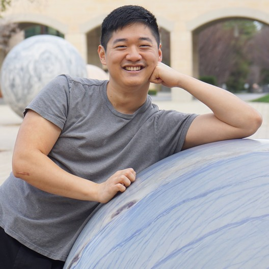

|  |
Charles A. Chang, PhD
Biotech Scientist
I am a biomedical scientist and cell therapy manufacturing consultant currently working in the SF Bay Area. My professional goals are to use my strong technical skills and experience to advance curative treatments in the cell therapy and biologics spaces. |
| Dates | Work | Description |
|---|---|---|
| 2022-present | Scientist at Jasper Therapeutics | Aided in the initial setup of the lab space. Introduced new disease and transplant models used to provide IND-enabling studies in the company's gene therapy and transplant pipelines. |
| 2018-present | GMP Islet & Bone Marrow Manufacturing Consultant at Stanford Health Care | Aided in the setup of space within the Cell Therapy Facility to manufacture human islets, bone marrow, and splenocytes. Provided staff training to isolate bone marrow and pancreatic islets from deceased donors |
| 2018-2022 | Postdoctoral Fellow at Stanford School of Medicine | Trained and assised PhD students and other postdocs with transplant and cell isolation studies in mice, rat, pig, non-human-primate, and human tissues. Published a study demonstrating immunosuppression-free islet transplant tolerance. |
| 2015-2018 | GMP Islet Cell Specialist at Baylor Medical Center | Assisted with and eventually led the clinical islet isolation team. Manufactured human islets to GMP standards. Coordinated with surgical team for pancreas pickup and islet delivery and infusion. |
| Dates | Location |
|---|---|
| 2013-2018 | PhD in Biomedical Studies from Baylor University & Baylor Scott & White Research Institute. |
| 2009-2013 | B.S. in Biology and PhD in Biomedical Studies from Baylor University. |
| Dates | Course |
|---|---|
| Completed December 2022 | An Entire MBA in 1 Course:Award Winning Business School Prof by Chris Haroun |
| September 2022-Present | 100 Days of Code: The Complete Python Pro Bootcamp by Dr. Angela Yu |